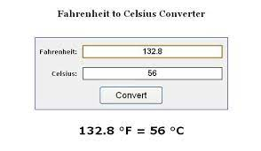

Projects
Portfolio
This portfolio project serves as an effective tool to showcase my skills and achievements, providing a professional online presence for potential employers and clients. It demonstrates my proficiency in web development, HTML, and CSS, as well as a sense of design aesthetics. Additionally, it offers a platform to connect with others in the professional sphere through social media and contact options.
Temperature calculator
HTML: Set up the basic structure of the calculator by creating input fields for the user to enter the temperature value and select the unit (Celsius, Fahrenheit, etc.), along with a button to initiate the conversion and display the result. CSS: Apply styles to make the calculator visually appealing and user-friendly. You can design a clean interface and arrange the elements in a logical manner. JavaScript: Implement the temperature conversion logic. This includes capturing user input, performing the necessary calculations based on the selected units, and displaying the converted temperature.
Netflix Clone

In this thrilling web development project, I embarked on creating a Netflix clone using the power of HTML and CSS. Inspired by the sleek and user-friendly interface of the popular streaming platform, I set out to recreate the magic. Armed with my coding skills, I carefully crafted the homepage with a dynamic header featuring the Netflix logo and a responsive navigation bar for smooth browsing. The main content area was designed to showcase an enticing collection of movie posters with a hover effect that revealed additional information. Employing CSS animations, I added a touch of elegance to the scrolling experience. To bring the project to life, I implemented a sign-up form with validation and a search bar to help users find their favorite shows effortlessly. Throughout the process, I ensured a responsive design, making the Netflix clone accessible and enjoyable across various devices. As I witnessed the project unfold before my eyes, I felt a sense of accomplishment, knowing that my coding prowess had brought a piece of the streaming giant's allure into the virtual world.
Shortcut Keys Table

In my latest HTML project, I embarked on creating a handy website dedicated to showcasing a comprehensive list of shortcut keys for various software applications and operating systems. The project aimed to provide users with a quick reference guide to boost productivity and efficiency in their daily tasks. I structured the website with a user-friendly layout, incorporating sections for different categories of applications, such as word processors, graphic design software, web browsers, and operating systems. Each category page featured a list of shortcut keys, along with brief descriptions of their functions. To enhance the user experience, I implemented search functionality, enabling users to find specific shortcut keys effortlessly. The project also included interactive elements, allowing users to bookmark their favorite shortcuts or suggest new ones for the community. As I delved into the project, I relished the opportunity to combine my HTML skills with a passion for optimizing workflows, knowing that this project would be a valuable resource for countless users seeking to master the art of keyboard wizardry.